Remittance plugin
Remittance plugin
|
Licence : - Licence : Annual fee Order: Remittance plugin - |
With the remittance plugin allows you to easily manage your outstanding items. You may send an e-mail to all debtors to remind them their outstanding amounts and totals.
You may also print outstanding (arrears) accounts and send them by post.
By also purchasing the Multimedia plugin, you can immediately see which e-mails and reminders you have sent.
The setup and configuration process is briefly as follows:
- Activation – Enable the plugin in a Set of Books.
- Configure the e-mail with the settings and details from your Internet Service Provider (ISP).
- Creating e-mail templates to be displayed in your system's default e-mail program. You may create any number of email templates for your requirements.
- Customise the remittance / reminder layout files for your specific needs. These layout files will automatically generate the list of outstanding transactions and the total for each debtor account. The remittance / reminder layout files will be attached to each debtor e-mail.
After the setup and configuration process, using the Remittance plugin is briefly as follows:
- Access the Remittance plugin. (An option is available to automatically launch this plugin if transactions are outstanding).
- Check the selection criteria on the Remittance plugin. (You may select and preview remittance layout files).
- Print selected or all debtors.
- To send e-mails:
- Enter the e-mail text header (topic / subject)
- Select an e-mail template. (You may preview the template or the remittance layout file)
- Enter additional text (free text) to be added to the e-mail template. (An extra file can be attached – in addition to the Remittance layout file).
- Click on the Send button to fire off the e-mails.
Activation
On the Setup ribbon, select Plugins → Financial tools → Remittance. If this plugin is not listed under Plugins → Financial tools, activate it via Tools → Activate plugins.
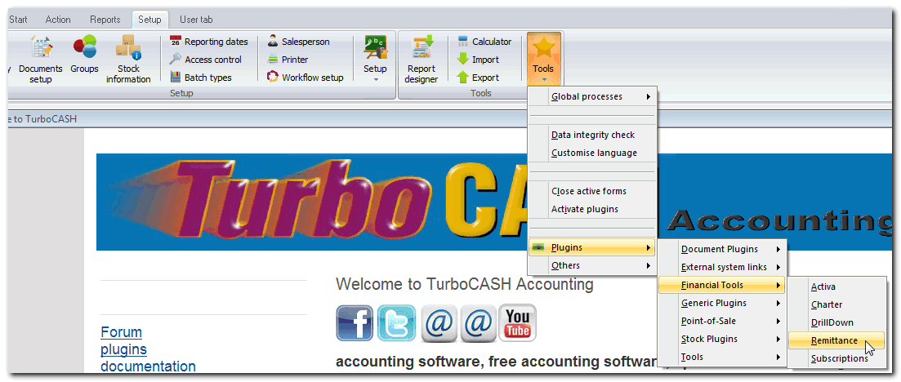
The activation screen for the Remittance plugin is launched.
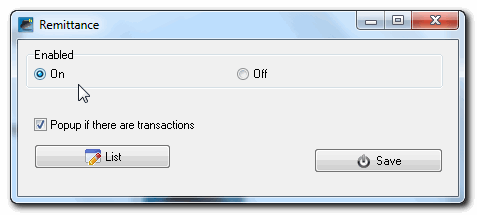
The options are as follows:
- Enabled: Select the On radio button option to activate the Remittance plugin.
- Popup if there are transactions (tick box): By default this field is not ticked. When you reopen the Set of Books, the Remittance icon (additional icon) will be available on the Default ribbon from which you may launch the Remittance plugin manually. If you select (tick) the Popup if there are transactions tick box, the Remittance plugin will automatically be launched to remind you if reminders needs to be sent.
- List button: This will launch the following Remittance screen:
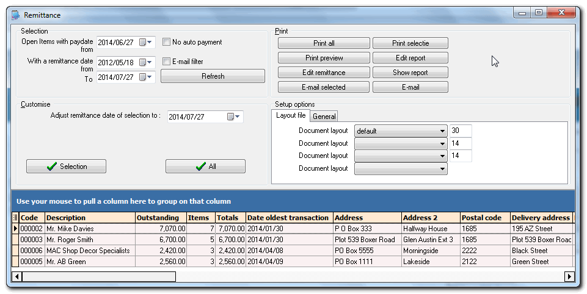
- Save button: If you have clicked on the List button, you need to click on the Close (X) icon on the title bar of the above Remittance screen (this screen will be discussed in the next sections).
- Reopen the Set of Books.
Important notes to optimise the Remittance plugin
To use this plugin, the exact same principles (good accounting practice) as applicable to all reports should be applied.
You need to check that all transactions for the debtors are posted (updated to the ledger) and check that the correct debit transactions are linked to the correct credit transactions.
If you do not see a list of debtors, the incorrect date is probably selected.
- To get back the original list, you can perform this operation:
- The date of the field "Not since reminded" puts you on a date, for example, two years later than the date on which it now stands.
- And the field "Customizing the date selection to for example, 2 years back in time.
Unposted batches and documents
Make sure that all:
- Unposted transactions in documents are updated (posted) to the ledger.
- All unposted transactions in batches are updated (posted) to the ledger.
- All unposted transactions in bank accounts (receipts and payments batches) are updated (posted) to the ledger. In the case of using the Bank import plugin – make sure that your bank statements are correctly imported and processed (including updated (posted) to the ledger).
- If you use repeating transactions in batches make sure that these are processed (Repeating transactions) are imported and processed in a normal batch and posted (updated) to the ledger.
- If you are using Repeating invoices are processed (including updated (posted) to the ledger).
- If you are using the Calendar (Planner) make sure that Repeating invoices Invoices for hours, etc. are processed (including updated (posted) to the ledger).
- If you need to generate multiple transactions in batches (i.e. Interest on overdue debtor accounts, Balances with outstanding amount less than a specified amount, Fixed amount to all debtors, Charge amounts for debtor accounts (you need to process and post (update) to the ledger.
Open item / Balance brought forward processing
Basic principles:
- Open item processing for debtor accounts will list only those transactions / documents which is outstanding. Transactions / Invoices which are fully settled (paid) and/or credited with a credit note (or other batch transactions) will be listed.
- Balance brought forward processing for debtor accounts will list all the transactions / documents which is recorded (posted (updated) to the ledger). Transactions / Invoices irrespective whether these are fully settled (paid) and/or credited with a credit note (or other batch transactions) will be listed.
Open item processing (recommended)
To check the outstanding items on debtor accounts:
On the Default ribbon, click on the Open item link icon.
On the Totals tab, click on the Filter button. All debtor accounts (set as an open item account on the Accounting information tab), should be linked.
Note - If there are any outstanding items (debit transaction(s) which are not linked to a credit transaction(s)), the line colour will display in an orange colour.

For example, Mr. AB Green, is displayed in an orange background colour. Double-click on that account, it will list the debit as well as credit transactions separately.
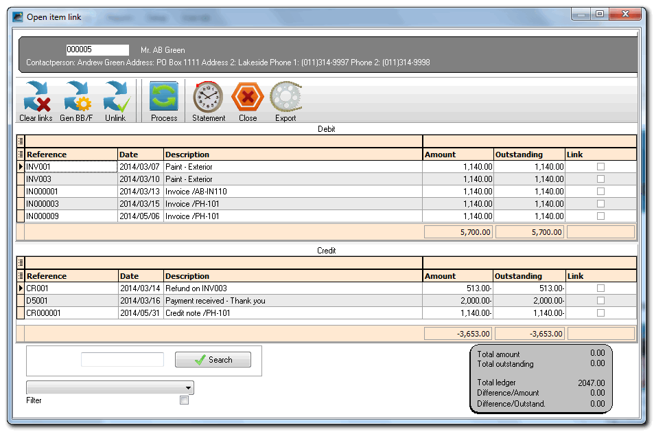
If the payment (receipt) and credit notes are linked to the correct transactions, the credit transactions will be cleared and only those invoices with outstanding amounts, will be listed.
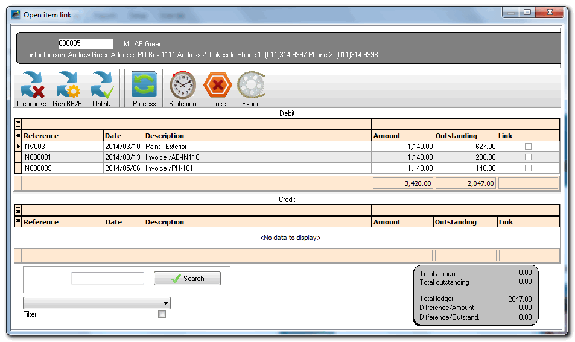
In this example, invoice IN000003 will not be listed, as IN000003 is cancelled with credit note CR000001.
Configuration and setup
If the Remittance plugin is not already configured or automatically launched, you may click on the, Remittance icon (additional icon) on the Default ribbon.
The screen consists of four (4) sections as well as the data (columns section)
Selection
- Open item since pay date from - Enter or select the date.
- With a remittance date from and to - Enter or select the date.
- No auto payment - Hide the debtors for which automatic payments have been scheduled.
- E-mail filter – If this field is not selected, all debtor accounts (including those without e-mail addresses will be listed. Select (tick) this option to hide debtors without e-mail addresses. If selected, only those Debtors with e-mail addresses entered in the E-mail field of the Debtor accounts screen will be listed.
- Refresh button – After selecting these dates, you may click on this button to list only those transactions matching your selection criteria.
Customise -
- Adjust remittance date of selection to - Enter or select the date. This will set the date "last reminder" for the selected debtor (or all debtors) to the date selected.
- Selection button - If you click on this button, the following confirmation message will be displayed: “This action will adjust the last date remittance at the "selected" debtors! Do you wish to continue?”
- All button – If you click on this button, the following confirmation message will be displayed: “This action will adjust the last date remittance at the "ALL VISIBLE" debtors! Do you wish to continue?”
Print -
- Print all button – This will print the Remittance (reminder) layout file for all debtor accounts in the list to the default system printer. (...\plug_ins\reports\remittance\layouts).
- Print selected button – This will print the Remittance (reminder) layout file for a selected debtor account in the list to the default system printer. (...\plug_ins\reports\remittance\layouts).
- Print preview button - This will print the Remittance (reminder) layout file for a selected debtor account in the list in the Reportman preview screen. (...\plug_ins\reports\remittance\layouts).
- Edit remittance button - This will open the Remittance (reminder) layout file in the Reportman designer. You may then edit the Remittance. (...\plug_ins\reports\remittance\layouts).
- Edit report - This will open the Remittance (listing all debtor accounts) report in the Reportman designer. You may then edit the report. (...\plug_ins\reports\remittance\layouts\list.rep).
- Show report - This will print the Remittance (listing all debtor accounts) report for a selected debtor account in the list in the Reportman preview screen. (...\plug_ins\reports\remittance\list.rep).
- E-mail selected – This will send the Remittance report as an e-mail attachment for a selected debtor account.
- E-mail - This will send the Remittance report as an e-mail attachment for all debtor accounts in the list.
Setup options – This section consists of two (2) tabs (i.e. Layout file and General tabs).
- Layout file tab
- Document layout files – You may select up to 4 remittance (reminder) reports.These reports are stored in the ...\plug_ins\reports\remittance\layouts directory. You may add your own remittance, reminder reports and edit these reports using the Report designer to suit your specific requirements.
- You may also specify (enter) the number of days for which the reports must be printed.
- General tab -
- Advanced options – This is an advanced search filter in which you may enter extra text to filter the debtors on the list. For example, to list only debtor accounts for a specific postal code, enter “ and SPostalCode = '2222' “. Then click on the Refresh button. This will only list those debtors with postal code “2222” on the list.
- Update in Multimedia - By default all e-mail will be updated in the Multimedia feature of this plugin. Should you wish to send the reminders via the Print selected or the Print all button, you need to select this option, if you need to archive these documents in the Multimedia component of this Plugin.
- Default days no remittance - Enter the number of days for processing reminders.
E-mail account setup
Before you can send e-mails, you need to configure your e-mail account in the Set of Books. This is only a once off configuration. Unless your requirements change.
To do this, you need to click on the E-mail or E-mail selected button.
Then click on the Settings tab.
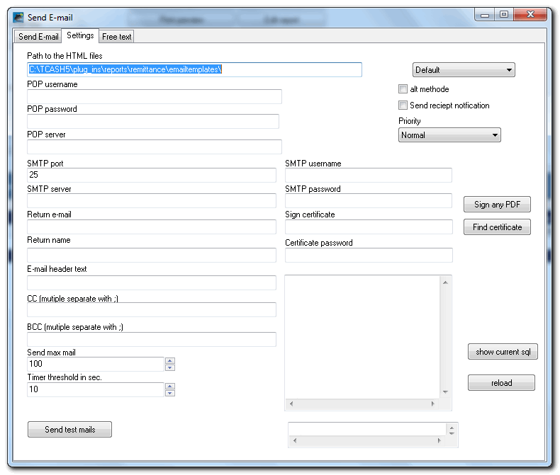
Select or enter the following, where applicable:
|
Field |
Description |
|
Path to the HTML file: |
The default path is displayed as “C:\TCASH5\plug_ins\reports\remittance\emailtemplates\”. If you have installed TurboCASH into a different folder, you may need to overtype this. Specifies the path where the files for the Document email pro plugin is located. This path may be edited for your own requirements if you have a personal set of files. |
|
POP username: |
Enter the POP username as registered with your ISP (Internet Service Provider) for your e-mail account settings, if required. |
|
POP password: |
Enter the POP Password as registered with your ISP (Internet Service Provider) for your e-mail account settings, if required. |
|
POP server: |
Enter the POP server as registered with your ISP (Internet Service Provider) for your e-mail account settings, if required. |
|
SMTP port: |
The default is “25” seconds. This is determined by the default configuration of your operating system. |
|
SMTP server: |
Enter a valid SMTP as registered with your ISP (Internet Service Provider) for your e-mail account settings. Note when POP before SMTP (usually when you are not using your provider sent emails) you can create an e-mail box which nobody reads. This is because if there are multiple ISP's on the mail box mail is read, the POP for SMTP is not working properly. It is best to use an account that is further used by anyone. |
|
SMTP username: |
Enter the SMTP username as registered with your ISP (Internet Service Provider) for your e-mail account settings. |
|
SMTP password: |
Enter the SMTP password as registered with your ISP (Internet Service Provider) for your e-mail account settings. |
|
Return e-mail: |
This field is optional. You may enter your own e-mail address. |
|
Return name: |
This field is optional. You may enter your own name ro be displayed on the message to be displayed on the email field of the recipients e-mail or if the message is returned by your ISP in the case of an invalid e-mail address. |
|
E-mail header text: |
Type the text to be displayed as the Subject field of your operating system's default e-mail program. |
|
CC: (multiple separate with ;) |
This abbreviation CC “Carbon Copy” indicates secondary recipients of a message. Those recipients who are to receive a copy of a message directed to another. The list of recipients in the CC field is visible to all other recipients of the message. Enter a valid e-mail address, if necessary. Note you need to add a space before and after the semi-colon. If you do not add spaces, the first digit of the second and subsequent e-mail addresses may cut off. This could result in an undelivered mail error. |
|
BCC: (multiple separate with ;) |
This abbreviation BCC “Blind Carbon Copy” allows you to send a copy of your correspondence to a third party when you do not want to let the recipient know that you are doing this (or when you do not want the recipient to know the third party's e-mail address). You may also wish to enter this filed, when sending an e-mail to multiple recipients, you can hide their e-mail addresses from each other. Enter a valid e-mail address, if necessary. Note you need to add a space before and after the semi-colon. If you do not add spaces, the first digit of the second and subsequent e-mail addresses may cut off. This could result in an undelivered mail error. |
|
Send max mail: |
The default is “100”. You may use the scroll buttons or enter the number of the maximum emails required to send in a batch. This will limit the number of email messages. |
|
Timer threshold in sec: |
The default is “10” seconds. This is determined by the default configuration of your operating system. It is not recommend ed to change this, but you could experiment by changing the values. |
|
Default: |
Default is the standard option. You may select the html only option. |
|
Alt methode: |
Tick to select the alternative mode. |
|
Send receipt notification: |
If this field is selected (ticked), a read receipt will be requested by the recipient. |
|
Priority: |
Normal is the default priority. You may select Highest, High, Low or Below low option. This is the priority in which e-mails will be sent. |
|
Sign any PDF: |
Optional should be you can sign any pdf with this button (also the ones send to you). |
|
Find certificate: |
If you have a certificate, click in this button to locate it and add it to this plugin. You may use add Digital signatures to the PDF (portable document format) files (e.g. OpenSSL pkcs12.pxf) to your e-mail received by your recipients (e.g. debtors (customers). See: |
|
Certificate password: |
If you have selected a certificate, you need to enter a valid password for that certificate. |
|
Send test mails button: |
You may send test e-mails to check that the configuration is correct. |
- The box (on the lower right-hand side) - Some messages, e.g. may be displayed in the text area of the Settings screen. An example may be “your e-mail address Login failed”. This may indicate that something is not correctly entered on the settings.
- Show current sql button – The sql, is used to add the debtors, etc. for the Remittance plugin.
Send E-mail tab
A list of all the debtor accounts matching your criteria for which you will send e-mails will be listed.
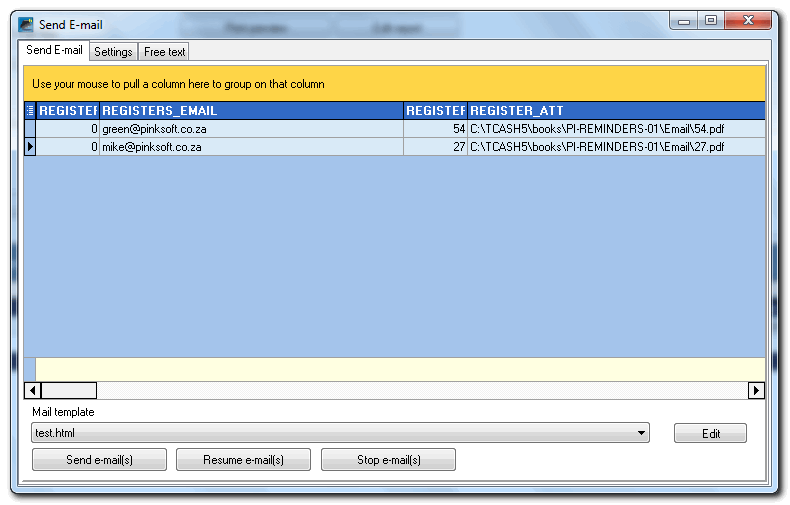
Mail template – This is the text which will be displayed in the e-mail message sent to the debtor account(s). At current only one (1) mail template (test.html) is shipped for the English language. You may add your own mail templates as necessary.
The mail template are stored in the ...\plug_ins\reports\remittance\emailtemplates folder.
Once you have created or added your templates, you may select the template.
Edit button – If you click on this button, the ...\plug_ins\reports\remittance\emailtemplates folder will be opened in Windows explorer or your system's default file browser.
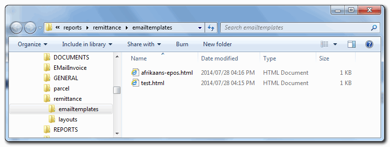
To create your own template it is easy and you may create as many templates, as required.
It is recommended that you copy the test.html file and rename it to your own needs.
The basic test.html template is as follows:
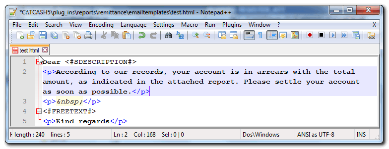
You may change all text as necessary. Please take note of the following two (2) fields:
<#SDESCRIPTION#> - This will add the name for the respective debtor accounts to the e-mail message.
<#FREETEXT#> - This will add the text as entered for the e-mail messages, as entered on the Free text field on the Free text tab.
You may preview the template when you click on the Preview in browser button on the Free text tab.
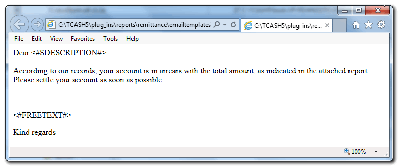
Free text tab
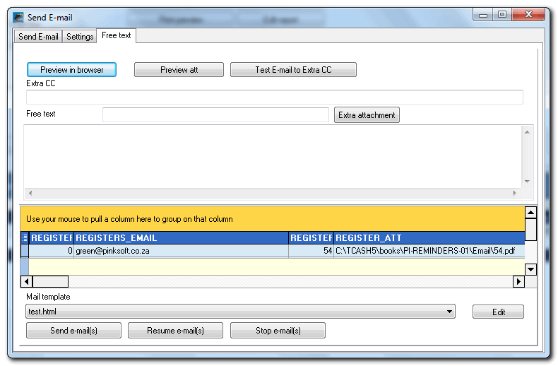
Preview in browser button – This will display the mail template in your system's default.
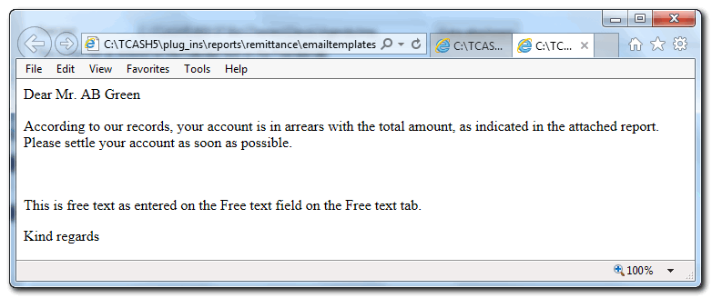
Preview att button – This will display the remittance (reminder) layout file (...\plug_ins\reports\remittance\layouts) in your system's default pdf reader.
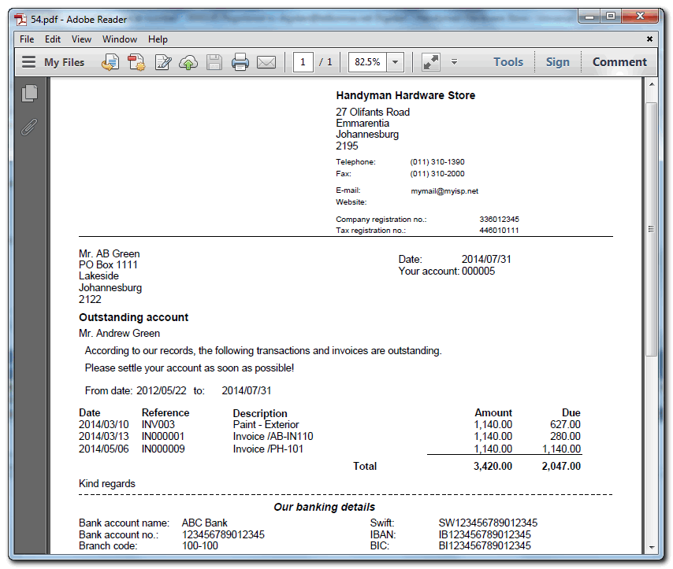
Test E-mail to extra CC – Test the mail to the extra e-mail address entered in the Extra CC field. Note if the remittance (reminder) layout file is opened using the Preview att button an error “Error sending e-mail” message may be displayed.
Extra attachment button – In addition to the remittance (reminder) layout file (...\plug_ins\reports\remittance\layouts) which will be automatically be attached to the e-mail, you may attach another file as an extra attachment. Please note that this attachment will be sent to all debtor accounts on your list.
Send e-mail(s) button – This will start to send e-mails and the attachments to the debtor accounts on the list.
Resume e-mail(s) button - If you have clicked on the Stop e-mail(s) button, this button will start sending the rest of the e-mails.
Stop e-mail(s) button – This will stop the e-mails from sending. You may click on the Resume e-mail(s) button to start sending the rest of the e-mails.
E-mail reminders
Once you have selected your criteria, you may e-mail the reminders to your debtors (customers). To do this, you may click on the following two (2) buttons:
- E-mail selected - click to send e-mail to a selected debtor (customer / client).
Tip : To select more than one debtor (customer / client) on the list, press the Ctrl key on your keyboard and select other debtors (customers) on the list and click on the E-mail selected button.
- Email - click to send e-mails to all the debtors (customers) in the list. This will not send e-mails to all the other debtors (customers) which are excluded from your search and filter criteria.
Recipient's E-Mail message
All debtor (customer / client) accounts (which have a valid e-mail address) will receive an email message with the reminder as a Potable Document Format (pdf file) as an attachment. An example of the e-mail message received by the recipient(s), is as follows:

Note : Remember to check and enter the subject (topic) in the E-mail header text field on the Settings tab. Type the text to be displayed as the Subject field of your operating system's default e-mail program. (In this example, “Remittance 1-4” was entered.
Customise remittance layout files

Change the text on the file:
Click on a text object (field) (red rectangles as per this example) and select the Label tab. Overtype the text as necessary.
Move text – drag it to the desired place.
Delete text or expressions.
Adding text
- TRpLabel – Add static text object to the report. Examples on the above picture are, , Telephone:, Fax:, E-mail:, Website:, Company registration no.:, Tax registration no.: address, etc.
- Add the messages or text to display on the report.
Add company logo
TRpImage – Click on this icon and click on the space and drag to insert a blank image object.
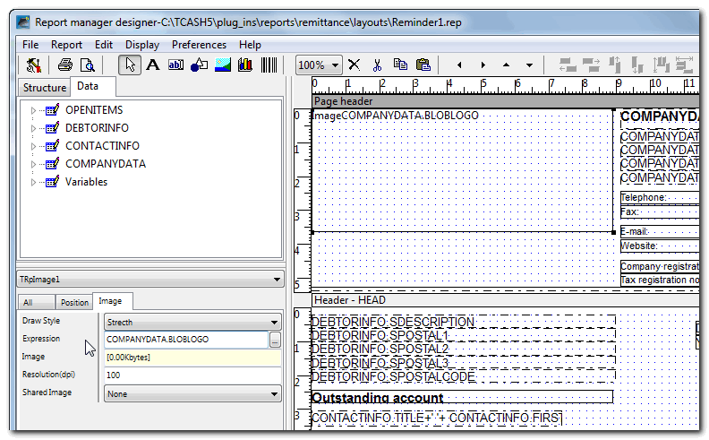
Enter “COMPANYDATA.BLOBLOGO” in the Expression field.
This is used to display your company logo on the reports and document layout files. The Company Logo dataset is COMPANYDATA.BLOBLOGO. The logo is stored in the database as a BLOB (Binary Large Object) and will be displayed printed on remittance layout files if loaded in Company info - Options screen (Default ribbon).
Add a static picture
TRpImage – Click on this icon and click on the space and drag to insert a blank image object.
Right-click on the image object and select the Open option on the context menu.